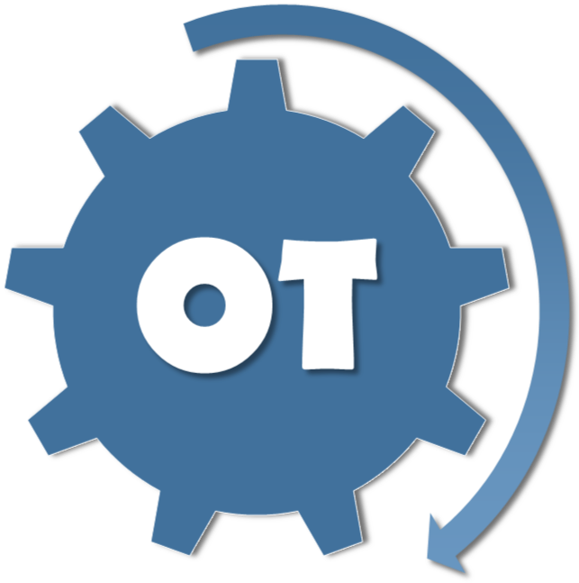

Tsung-Wei Huang
Assistant Professor, Department of ECEUniversity of Utah, Salt Lake City, UT, USA, 84112
Office: 2124 Merrill Engineering Building (MEB)
BS/MS (NCKU-CS), PhD (UIUC-ECE)
I am an assistant professor in the Department of ECE at the University of Utah. Prior to Utah, I was a research assistant professor in the Department of ECE and CSL at the University of Illinois at Urbana Champaign (UIUC). During my entire career, I have been building software systems from the ground up with extensive research interests in parallel processing, computer-aided design (CAD), and machine learning.
Recent News
Software Releases

Taskflow: A General-purpose Parallel and Heterogeneous Task Programming System
Taskflow helps C++ developers quickly write parallel and heterogeneous programs with high performance and simultaneous high productivity.

DtCraft: A Distributed Programming System using Data-parallel Streams
DtCraft helps developers streamline the building of high-performance distributed applications using data-parallel streams on a machine cluster.

OpenTimer: A High-performance Timing Analysis Tool for VLSI Systems
OpenTimer helps computer-aided design (CAD) developers quickly analyze the timing of large circuit designs.
Conference Papers
- Chun-Xun Lin, Tsung-Wei Huang, and Martin Wong, "An Efficient Work-Stealing Scheduler for Task Dependency Graph," IEEE International Conference on Parallel and Distributed Systems (ICPADS), Hong Kong, 2020.
- Kuan-Ming Lai, Tsung-Wei Huang, Pei-Yu Lee, and Tsung-Yi Ho, "ATM: A High Accuracy Extracted Timing Model for Hierarchical Timing Analysis," IEEE/ACM Asia and South Pacific Design Automation Conference (ASPDAC), Japan, 2021.
- Dian-Lun Lin and Tsung-Wei Huang, "A Novel Inference Algorithm for Large Sparse Neural Network using Task Graph Parallelism," IEEE High-performance and Extreme Computing Conference (HPEC), MA, 2020.
- Zizheng Guo, Tsung-Wei Huang, and Yibo Lin, "GPU-accelerated Static Timing Analysis," IEEE/ACM International Conference on Computer-aided Design (ICCAD), CA, 2020.
- Tsung-Wei Huang, "A General-purpose Parallel and Heterogeneous Task Programming System for VLSI CAD," IEEE/ACM International Conference on Computer-aided Design (ICCAD), CA, 2020.
- I.-C. Lin, U. Schlichtmann, Tsung-Wei Huang, and M. P.-H. Lin, "Overview of 2020 CAD Contest at ICCAD," IEEE/ACM International Conference on Computer-aided Design (ICCAD), CA, 2020.
- Guannan Guo, Tsung-Wei Huang, Chun-Xun Lin, and Martin Wong, "An Efficient Critical Path Generation Algorithm Considering Extensive Path Constraints," ACM/IEEE Design Automation Conference (DAC), San Francisco, CA, 2020.
- Chun-Xun Lin, Tsung-Wei Huang, Guannan Guo, and Martin Wong, "A Modern C++ Parallel Task Programming Library," ACM Multimedia Conference (MM), pp. 2285-2287, Nice, France, 2019.
- Chun-Xun Lin, Tsung-Wei Huang, Guannan Guo, and Martin Wong, "An Efficient and Composable Parallel Task Programming Library," IEEE High-performance and Extreme Computing Conference (HPEC), Waltham, MA, 2019.
- Tsung-Wei Huang, Chun-Xun Lin, Guannan Guo, and Martin Wong, "Cpp-Taskflow: Fast Task-based Parallel Programming using Modern C++," IEEE International Parallel and Distributed Processing Symposium (IPDPS), pp. 974-983, Rio de Janeiro, Brazil, 2019.
- Kuan-Ming Lai, Tsung-Wei Huang, and Tsung-Yi Ho, "A General Cache Framework for Efficient Generation of Timing Critical Paths," ACM/IEEE Design Automation Conference (DAC), pp. 108:1-108:6, Las Vegas, NV, 2019.
- Tsung-Wei Huang, Chun-Xun Lin, Guannan Guo, and Martin Wong, "Essential Building Blocks for Creating an Open-source EDA Project," ACM/IEEE Design Automation Conference (DAC), pp. 78:1-78:4, Las Vegas, NV, 2019.
- Tsung-Wei Huang, Chun-Xun Lin, and Martin Wong, "Distributed Timing Analysis at Scale," ACM/IEEE Design Automation Conference (DAC), pp. 1-2, Las Vegas, NV, 2019.
- Tsung-Wei Huang, Chun-Xun Lin, Guannan Guo, and Martin Wong, "A General-purpose Distributed Programming System using Data-parallel Streams," ACM Multimedia Conference (MM), pp. 1360-1363, Seoul, Korea, 2018.
- Chun-Xun Lin, Tsung-Wei Huang, Guannan Guo, and Martin Wong, "MtDetector: A High-performance Marine Traffic Detector at Stream Scale," ACM International Conference on Distributed and Event-based Systems (DEBS), pp. 205-208, Hamilton, New Zealand, 2018.
- Chun-Xun Lin, Tsung-Wei Huang, Ting Yu, and Martin Wong, "A Distributed Power Grid Analysis Framework from Sequential Stream Graph," ACM Great Lakes Symposium on VLSI (GLSVLSI), pp. 183-188, Chicago, IL, 2018.
- Chun-Xun Lin, Tsung-Wei Huang, and Martin Wong, "Routing at Compile Time," IEEE International Symposium on Quality Electronic Design (ISQED), pp. 169-175, Santa Clara, CA, 2018
- Tsung-Wei Huang, Chun-Xun Lin, and Martin Wong, "DtCraft: A Distributed Execution Engine for Compute-intensive Applications," IEEE/ACM International Conference on Computer-aided Design (ICCAD), pp. 757-765, Irvine, CA, 2017.
- T.-Y. Lai, Tsung-Wei Huang, and Martin Wong, "Libabs: An Effective and Accurate Macro-modeling Algorithm for Large Hierarchical Designs," IEEE/ACM Design Automation Conference (DAC), pp. 1-6, Austin, TX, 2017.
- Tsung-Wei Huang, Martin Wong, D. Sinha, K. Kalafala, and N. Venkateswaran, "A Distributed Timing Analysis Framework for Large Designs," IEEE/ACM Design Automation Conference (DAC), pp. 116:1-116:6, Austin, TX, 2016.
- Tsung-Wei Huang and Martin Wong, "OpenTimer: A High-Performance Timing Analysis Tool," IEEE/ACM International Conference on Computer-Aided Design (ICCAD), pp. 895-902, Austin, TX, 2015.
- Tsung-Wei Huang and Martin Wong, "On Fast Timing Closure: Speeding Up Incremental Path-Based Timing Analysis with MapReduce," IEEE/ACM International Workshop on System Level Interconnect Prediction (SLIP), CA, 2015.
- Tsung-Wei Huang and Martin Wong, "Accelerated Path-Based Timing Analysis with MapReduce," ACM International Symposium on Physical Design (ISPD) (slide), pp. 103-110, Monterey, CA, 2015.
- Tsung-Wei Huang, P.-C. Wu, and Martin Wong, "Fast Path-Based Timing Analysis for CPPR," IEEE/ACM International Conference on Computer-Aided Design (ICCAD), pp. 596-599, San Jose, CA, 2014.
- Tsung-Wei Huang, P.-C. Wu, and Martin Wong, "UI-Timer: An Ultra-Fast Clock Network Pessimism Removal Algorithm," IEEE/ACM International Conference on Computer-Aided Design (ICCAD) (slide), pp. 758-765, San Jose, CA, 2014.
- Tsung-Wei Huang, P.-C. Wu, and Martin Wong, "UI-Route: An Ultra-Fast Incremental Maze Routing Algorithm," IEEE/ACM International Workshop on System Level Interconnect Prediction (SLIP) (slide), San Francisco, CA, 2014.
- S.-H. Yeh, J.-W. Chang, Tsung-Wei Huang, and Tsung-Yi Ho, "Voltage-Aware Chip-Level Design for Reliability-Driven Pin-Constrained EWOD Chips," IEEE/ACM International Conference on Computer-Aided Design (ICCAD), pp. 353-360, San Jose, CA, 2012.
- Tsung-Wei Huang, J.-W. Chang, and Tsung-Yi Ho, "Integrated Fluidic-Chip Co-Design Methodology for Digital Microfluidic Biochips," ACM International Symposium on Physical Design (ISPD), pp. 49-56, Napa, CA, 2012
- Jia-Wei Chang, Tsung-Wei Huang, and Tsung-Yi Ho, "An ILP-based Obstacle-Avoiding Routing Algorithm for Pin-Constrained EWOD Chips," IEEE/ACM Asia and South Pacific Design Automation Conference (ASP-DAC), pp. 67-72, Sydney, Australia, 2012
- Tsung-Wei Huang, Tsung-Yi Ho, and K. Chakrabarty, "Reliability-Oriented Broadcast Electrode-Addressing for Pin-Constrained Digital Microfluidic Biochips," IEEE/ACM International Conference on Computer-Aided Design (ICCAD) (slide), pp. 448-455, San Jose, CA, 2011
- Tsung-Wei Huang, Yan-You Lin, Jia-Wei Chang, and Tsung-Yi Ho, "Chip-Level Design and Optimization for Digital Microfluidic Biochips," Proceeding of IEEE International Midwest Symposium on Circuits and Systems (MWSCAS), 2011
- Tsung-Wei Huang and Tsung-Yi Ho, "Recent Research and Emerging Challenges in the Designs and Optimizations for Digital Microfluidic Biochips," Proceeding of IEEE System on Chip Conference (SOCC), pp. 12-17, Taipei, Taiwan, 2011
- P.-H. Yuh, C.-Y Lin, Tsung-Wei Huang, Tsung-Yi Ho, C.-L. Yang, and Yao-Wen Chang, "A SAT-Based Routing Algorithm for Cross-Referencing Biochips," IEEE/ACM International Workshop on System Level Interconnect Prediction (SLIP) (slide), San Diego, CA, 2011
- Tsung-Wei Huang, H.-Y. Su, and Tsung-Yi Ho, "Progressive Network-Flow Based Power-Aware Broadcast Addressing for Pin-Constrained Digital Microfluidic Biochips," ACM/IEEE Design Automation Conference (DAC) (slide), pp. 741-746, San Diego, CA, 2011
- Tsung-Wei Huang, S.-Y. Yeh, and Tsung-Yi Ho, "A Network-Flow Based Pin-Count Aware Routing Algorithm for Broadcast Electrode-Addressing EWOD Chips," IEEE/ACM International Conference on Computer-Aided Design (ICCAD) (slide), pp. 425-431, San Jose, CA, 2010
- Tsung-Wei Huang and Tsung-Yi Ho, "A Two-Stage ILP-Based Droplet Routing Algorithm for Pin-Constrained Digital Microfluidic Biochips," ACM International Symposium on Physical Design (ISPD) (slide), pp. 201-208, San Francisco, CA, 2010
- Tsung-Wei Huang, C.-H. Lin, and Tsung-Yi Ho, "A Contamination Aware Droplet Routing Algorithm for Digital Microfluidic Biochips," IEEE/ACM International Conference on Computer-Aided Design (ICCAD) (slide), pp. 151-156, San Jose, CA, 2009
- Tsung-Wei Huang and Tsung-Yi Ho, "A Fast Routability- and Performance-Driven Droplet Routing Algorithm for Digital Microfluidic Biochips," IEEE International Conference on Computer Design (ICCD) (slide), pp. 445-450, Lake Tahoe, CA, 2009
Journal Papers
- Tsung-Wei Huang, Yibo Lin, Chun-Xun Lin, Guannan Guo, and Martin Wong, "Cpp-Taskflow: A General-purpose Parallel Task Programming System at Scale," IEEE Transactions on Computer-Aided Design of Integrated Circuits and Systems (TCAD), accepted
- Tsung-Wei Huang, Guannan Guo, Chun-Xun Lin, and Martin Wong, "OpenTimer v2: A New Parallel Incremental Timing Analysis Engine," IEEE Transactions on Computer-Aided Design of Integrated Circuits and Systems (TCAD), accepted
- Tsung-Wei Huang, Chun-Xun Lin, and Martin Wong, "DtCraft: A High-performance Distributed Execution Engine at Scale," IEEE Transactions on Computer-Aided Design of Integrated Circuits and Systems (TCAD), vol. 38, no. 6, pp. 1070-1083, June, 2019
- Tsung-Wei Huang and Martin Wong, "UI-Timer 1.0: An Ultra-Fast Path-Based Timing Analysis Algorithm for CPPR," IEEE Transactions on Computer-Aided Design of Integrated Circuits and Systems (TCAD), vol. 35, no. 11, pp. 1862-1875, Nov. 2016
- S.-H. Yeh, J.-W. Chang, Tsung-Wei Huang, S.-T. Yu, and Tsung-Yi Ho, "Voltage-Aware Chip-Level Design for Reliability-Driven Pin-Constrained EWOD Chips," IEEE Transactions on Computer-Aided Design of Integrated Circuits and Systems (TCAD), vol. 33, no. 9, pp. 1302-1315. Sept. 2014
- J.-W. Chang, S.-H. Yeh, Tsung-Wei Huang, and Tsung-Yi Ho, "An ILP-based Routing Algorithm for Pin-Constrained EWOD Chips with Obstacle Avoidance," IEEE Transactions on Computer-Aided Design of Integrated Circuits and Systems (TCAD), vol. 32, no. 11, pp. 1655-1667, Nov. 2013
- Y.-H. Chen, C.-L. Hsu, L.-C. Tsai, Tsung-Wei Huang, and Tsung-Yi Ho, "A Reliability-Oriented Placement Algorithm for Reconfigurable Digital Microfluidic Biochips Using 3D Deferred Decision Making Technique," IEEE Transactions on Computer-Aided Design of Integrated Circuits and Systems (TCAD), vol. 32, no. 8, pp. 1151-1162, Aug. 2013
- J.-W. Chang, S.-H. Yeh, Tsung-Wei Huang, and Tsung-Yi Ho, "Integrated Fluidic-Chip Co-Design Methodology for Digital Microfluidic Biochips," IEEE Transactions on Computer-Aided Design of Integrated Circuits and Systems (TCAD), vol. 32, no. 2, pp. 216-227, Feb. 2013
- Tsung-Wei Huang, S.-Y. Yeh, and Tsung-Yi Ho, "A Network-Flow Based Pin-Count Aware Routing Algorithm for Broadcast-Addressing EWOD Chips," IEEE Transactions on Computer-Aided Design of Integrated Circuits and Systems (TCAD), vol. 30, no. 12, pp. 1786-1799, Dec. 2011
- Tsung-Wei Huang and Tsung-Yi Ho, "A Two-Stage ILP-Based Droplet Routing Algorithm for Pin-Constrained Digital Microfluidic Biochips," IEEE Transactions on Computer-Aided Design of Integrated Circuits and Systems (TCAD), vol. 30, no. 2, pp. 215-228, Feb. 2011
- Tsung-Wei Huang, C.-H. Lin, and Tsung-Yi Ho, "A Contamination Aware Droplet Routing Algorithm for the Synthesis of Digital Microfluidic Biochips," IEEE Transactions on Computer-Aided Design of Integrated Circuits and Systems (TCAD), vol. 29, no. 11, pp. 1682-1695, Nov. 2010
Patents
- Tsung-Wei Huang, K. Kalafala, D. Sinha, and N. Venkateswaran, "Distributed Timing Analysis of a Partitioned Integrated Circuit Design," US20170242945A1, 08/24/2017
- Tsung-Wei Huang, K. Kalafala, V. B. Rao, D. Sinha, and N. Venkateswaran, "Incremental Common Path Pessimism Analysis," US9836572B2, 12/05/2017
Thesis
- Tsung-Wei Huang, "Distributed Timing Analysis," PhD Dissertation, University of Illinois at Urbana-Champaign (UIUC), Dec 2017
- T.-W Huang, "Routing for Digital Microfluidic Biochips: From Fluidic-Level toward Chip-Level," Master Thesis, National Cheng-Kung University, Taiwan, July 2011
Conference Reviewer
- ACM/IEEE Design Automation Conference (DAC)
- ACM/IEEE International Conference on Computer-Aided Design (ICCAD)
- ACM/IEEE Asia and South Pacific Design Automation Conference (ASP-DAC)
- ACM International Symposium on Physical Design (ISPD)
- ACM International Workshop on Timing Issues in the Spec and Synthesis of Digital Systems (TAU)
Journal Reviewer
- ACM Transactions on Design Automation of Electronic Systems (TODAES)
- IEEE Transactions on Computer-aided Design of Integrated Circuits and Systems (TCAD)
- IEEE Transactions on Very Large Scale Integration Systems (TVLSI)
- IEEE Transactions on Big Data (TBD)
- Integration, the VLSI Journal
- Biomicrofluidics, American Institute of Physics
Organizer
- Co-char, IC/CAD Contest at IEEE/ACM ICCAD, 2020
- Publicity Chair, International Workshop on Logic Synthesis (IWLS), 2020
- Chair/Co-chair, ACM SIGDA CADathlon International Programming Contest, 2018-2020
- Chair, VSDOpen Online EDA Conference, 2018
- Co-chair, ACM TAU Timing Analysis Contest, 2018
Program Committee
- IEEE/ACM International Conference on Computer-aided Design (ICCAD), 2019-2020
- IEEE/ACM Asia and South Pacific Design Automation Conference (ASPDAC), 2019-2020
- IEEE International Conference on Computer Design (ICCD), 2020
- ACM TAU, 2020
- The C++ Conference (CppCon), 2019
- Champion of the IEEE/MIT/Amazon HPEC Sparse Deep Neural Network Challenge, 2020 (Champions)
- Second Place, Open Source Software Competition (Taskflow), ACM Multimedia Conference, 2019
- ACM SIGDA Outstanding PhD Dissertation Award, 2019 (ACM SIGDA OPDA)
- Best Tool Award (OpenTimer), Workshop on Open-source EDA Technology, 2018 (WOSET Winner)
- Best Open Source Software Award (DtCraft), ACM Multimedia Conference, 2018 (ACM MM Awards)
- Best Poster Award (Taskflow), the Official C++ Conference, 2018
- Second and First Place, ACM/SIGDA CADathlon Programming Competition, 2014 and 2017 (CADathlon)
- First, Second, and First Place, ACM TAU Timing Contest, 2014 through 2016 (TAU Contest)
- Yi-Min Wang and Pi-Yu Chung Endowed Research Award, UIUC, IL, USA, 2016 (ECE Graduate Award)
- Rambus Computer Engineering Research Fellowship, UIUC, IL, USA, 2015-2016 (ECE Fellowship)
- A. Richard Newton Young Student Fellow, ACM/IEEE Design Automation Conference, 2009, 2011, and 2014
- Study Abroad Fellowship, Ministry of Education, Taiwan, 2012-2014
- Microelectronics and Computer Development Fellowships, UT Austin, TX, USA, 2012-2013
- Best Paper Award, Workshop on Synth and System Integration of Mixed Info Technology, 2012 (SASIMI Award)
- Second Place, ACM/Microsoft Student Research Competition Grand Final, 2011 (ACM News)
- Best Master Thesis Award, Chinese Institute of Electrical Engineering, 2011
- Best Master Thesis Award, IEEE Tainan Section (TIEE Award), 2011
- Best Master Thesis Award, Institute of Information and Computing Machinery, (IICM Award), 2011
- First Place, ACM/SIGDA/Microsoft Student Research Competition, 2010 (ACM News)
- Outstanding Student Scholarship, Garmin Corporation, Taiwan, 2010
- Outstanding Graduate Fellowship, National Cheng Kung University, Taiwan, 2010 (CS Graduate Fellowship)
- EDA Scholarship, SpringSoft Education Foundation, 2009 and 2010
- Outstanding Engineering Student Fellowship, Chinese Institute of Engineers, Taiwan, 2010 (CIE Fellowship 2010)
- Third Place, National Collegiate Cell-Based IC Design Contest, Ministry of Education, Taiwan, 2010
- First Place, National Collegiate Nano Device CAD Contest, Nano Device Laboratories, Taiwan, 2009
- Third Place, National Collegiate Programming Contest, Ministry of Education, Taiwan, 2009
- Travel Grant Award, Foundation for the Advancement of Outstanding Scholarship, Taiwan, 2009
- Second Place, National Collegiate IC/CAD Contest, Ministry of Education, Taiwan, 2008 (CAD Contest 2007)
- Presidential Award, Department of Computer Science, National Cheng Kung University, Taiwan 2007
{kind=link}
University of Utah
University of Illinois at Urbana-Champaign
THANK YOU ALL!
I could not come this far without the following people who have supported, motivated, and inspired me to continue growing:
- Pao-I Chen, my beloved wife
- Hui-Fei Hu, Ming-Ching Huang, and Sheng-Yi Huang, my beloved family
- Martin Wong, my PhD advisor
- D. Chen, W.-M. Hwu, and R. Rutenbar, my PhD committee
- Tsung-Yi Ho, my master advisor
- Jhih-Chian Wu, my roommate during my PhD life
- David Z. Pan, UT Austin
- Krishnendu Chakrabarty, Duke University
- Chun-Yao Wong, NTHU
- Y.-W. Chang and Iris H.-R. Jiang NTU
- Bei Yu, Michael R. Lyu, CUHK
- Xiaoqing Xu, ARM
- Benny Tseng, my roommate at UT Austin
- Marco and Daniele, my colleague at Citadel LLC
- Jin Hu, M.-C. Kim, D. Sinha, N. Venkateswaran, L. Stok, and K. Kalafala, my colleague at IBM
- P. V. Srinivas, my colleague at Mentor Graphics
- Li-Da Huang, my landlord at Austin
- Chun-Xun Lin, Guannan Guo, H. Tian, L. Hwang, Z. Xiao, D. Guo, T.-Y. Lai, and I.-J. Liu, my colleagues at UIUC CAD group
- Yuting Chen Wu, UIUC
- Chen-Hsuan Lin, Google
- Kunal Ghosh, director of VSD
- Billy Lee, NCTU
- Igor Keller, Cadence
- George Chen and Jignesh, Intel
- Jingtong Hu, U Pitt
- Andreas Olofoson, program manager at DARPA
- Bill Swartz, TimberWolf and UT Dallas
- Pierre-Emmanuel Gaillardon, my Utah Colleague
Research Grants
I am grateful for the following organizations to support my research:
- PI, "OpenTimer and DtCraft," $427K, DARPA, 2018-2019 (University of Illinois)
PhD Students

Cheng-Hsiang Chiu
(PhD@Utah 20-)Dian-Lun Lin
(PhD@Utah 20-)External Student Collaborators
I am blessed to collaborate with the following students (supervised by Prof Martin Wong):
Guannan Guo
(PhD@UIUC 17-)